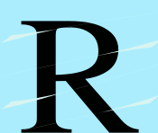

Clicker: Este proyecto se basa en un tipo de juego llamado "clicker". Está incompleto pero he decidido mostrarlo ya que creo que muestra algunas cualidades en cuanto a la programación front-end. El proyecto se realizó en conjunto con un compañero cuando estudiábamos el ciclo superior de DAW: Pablo Leal del Ojo Bravo.
Clicker
Pomodoro: Este es un proyecto sobre el reloj pomodoro. Este reloj muestra una cuenta atrás completamente configurable sobre el método de trabajo "pomodoro". Se muestran algunas destrezas básicas como el manejo con las horas en tiempo real
Pomodoro
Joyería: Se trata de un prototipo de una joyería donde se muestran diferentes secciones tanto para comprar un producto como para rellenar un formulario.
Joyería
¿Necesitas un proyecto?
Contacta conmigo a través de contacto sin compromiso
